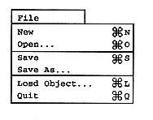
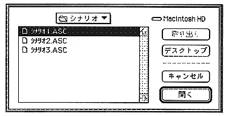

Open
When “Open” is selected, a scenario file selection dialog is displayed, and a list of scenario files that can be opened is displayed (Figure 2.7). When the scenario file name to be edited is opened, the layout file, collision file, and environment file are opened at the same time as the scenario file.

Save
Select “Save” to save the created scenario. It takes time to save when there is a lot of edited data. This is because collision data is converted and layout files are created when saved.
Save As
To save the scenario with a different file name, select “Save As”. In the dialog box that appears, enter the scenario file name (Figure 2.8). The scenario file name follows the MS-DOS file naming convention and the extension is "ASC". Similar to “Save”, collision data is converted and a layout file is created when saving. When the scenario is saved, the files shown in Table 2.2 are created in the same folder. For details, refer to “5. Data Format”.